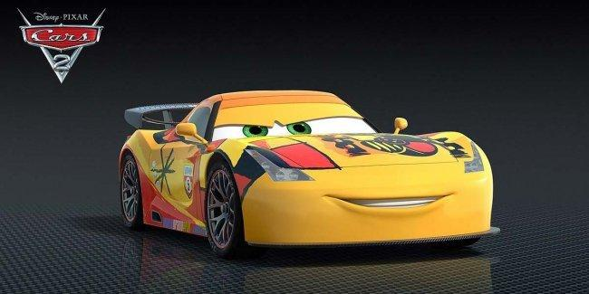

El más veloz de los coches carrera, Rayo McQueen (doblado en su versión original por Owen Wilson), y su inseparable amigo Mate (Larry The Cable Guy) cruzan el océano para hacer realidad el nuevo sueño del coche rojo: ganar en el primer Grand Prix Mundial y coronarse como el vehículo de carreras más veloz del mundo
